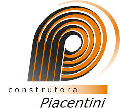
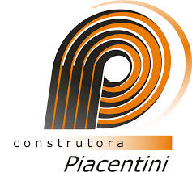

Quem Somos Nós
Fundada em 2019, a Metromap Topografia e Georreferenciamento é uma empresa dedicada a oferecer serviços de alta qualidade na área de topografia e georreferenciamento. Com uma equipe de profissionais experientes e altamente qualificados, nossa missão é fornecer soluções precisas e confiáveis para atender às necessidades dos nossos clientes em diversos setores.
Especializados em medição de terrenos, levantamento cadastral, locação de obras e outros serviços topográficos, utilizamos tecnologias avançadas e equipamentos de última geração para garantir a máxima precisão e eficiência em todos os nossos projetos. Nossa experiência e compromisso com a excelência nos permitem oferecer serviços que atendem aos mais altos padrões técnicos e regulatórios.
Na Metromap, entendemos a importância de uma base sólida para o sucesso de qualquer projeto. Por isso, nos dedicamos a fornecer dados precisos e análises detalhadas que ajudam nossos clientes a tomar decisões informadas e a alcançar seus objetivos com confiança.
Com um atendimento personalizado e soluções adaptadas às necessidades específicas de cada cliente, estamos comprometidos em superar suas expectativas. Nossa localização em Campo Largo, PR, nos permite atender a clientes em todo o Brasil, sempre com a qualidade e a precisão que eles merecem.
Na Metromap, acreditamos que um projeto bem-sucedido começa com uma análise detalhada e precisa do terreno. Nossa equipe é composta por especialistas que utilizam tecnologias de ponta para garantir a mais alta qualidade dos dados fornecidos. Desde a medição de terrenos até a locação de obras e a realização de estudos detalhados, estamos prontos para enfrentar qualquer desafio com profissionalismo e dedicação.
Oferecemos serviços de levantamento planialtimétrico, georreferenciamento e volumetria, além de outros serviços especializados que atendem às necessidades dos nossos clientes. Com uma abordagem centrada no cliente, garantimos que cada projeto seja tratado com a atenção e a precisão que ele merece.
Nossa equipe está sempre disponível para fornecer suporte e responder a qualquer dúvida que você possa ter. Estamos comprometidos em oferecer soluções de alta qualidade que não só atendem, mas superam as expectativas dos nossos clientes. Entre em contato conosco para descobrir como podemos ajudar a transformar seu projeto em sucesso.
Com um histórico de sucesso e uma reputação consolidada no mercado, a Metromap é a escolha certa para suas necessidades de topografia e georreferenciamento. Venha conhecer nossos serviços e descubra por que somos a referência no setor.
 
